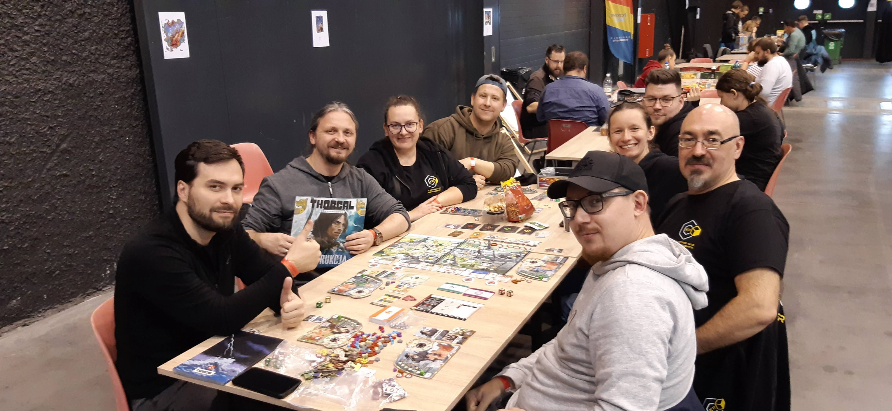
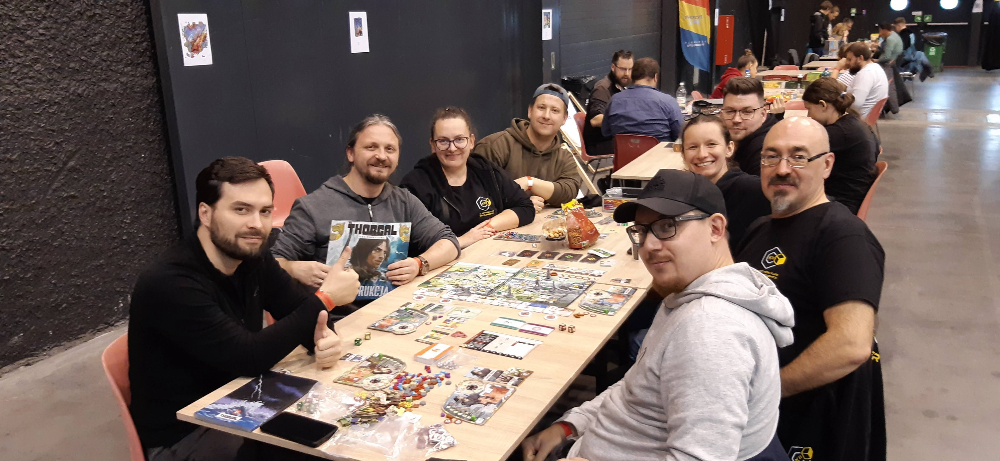

Witamy na stronie głównej
Olsztyńskiego Klubu Gier Planszowych - K11 !
Test link - Aktualności - wpis !
Test link Aktualności - Lista aktualności !
Olsztyńskiego Klubu Gier Planszowych - K11 !
Test link - Aktualności - wpis !
Test link Aktualności - Lista aktualności !
Jesteśmy klubem gier planszowych, który powstał w 2021 roku. Regularnie i aktywnie spotykamy się na gry planszowe.
Więcej informacji o klubie K11 można znaleźć tutaj
Harmonogram spotkań klubu K11 na grudzień 2024r. :
Planszówkowy Trening Mózgu
🎄2.12.2024r. (poniedziałek), godz. 18.00 - 24.00
w Masoneria Szisza Bar - link do Google Maps !
Kochamy Planszówki. Wieczór z K11
🎄5.12.2024r. (czwartek), godz. 18.00 - 24.00
w Masoneria Szisza Bar - link do Google Maps !
Zgrany Olsztyn. RPGowe Mikołajki
🎄07.12.2024r. (sobota), godz. 10.00 - 18.00
w MOK Olsztyn, Kamienica Naujacka - link do Google Maps !
Kochamy Planszówki. Wieczór z K11
🎄12.12.2024r. (czwartek), godz. 18.00 - 22.00
w Świetlica Rady Osiedla Dajtki, ul. Żytnia 71 - link do Google Maps !
Planszówki w Planecie 11. Mikołajkowe granie
🎄14.12.2024r. (sobota), godz. 10.00 - 14.00
w Biblioteka Planeta 11 - link do Google Maps !
Planszówkowy Trening Mózgu
🎄16.12.2024r. (poniedziałek), godz. 18.00 - 24.00
w Masoneria Szisza Bar - link do Google Maps !
Kochamy Planszówki. Wieczór z K11
🎄19.12.2024r. (czwartek), godz. 18.00 - 24.00
w Masoneria Szisza Bar - link do Google Maps !
Więcej informacji o wydarzeniach można znaleźć tutaj:


 



Uzbierane gry klubowe K11 !
Masz pytanie? Napisz do nas maila ! :
Email: k11.olsztyn@gmail.com
Social Media
Facebook
Szczegółowe informacje odnośnie naszych wydarzeń i newsy można znaleźć na Facebook'u.
Odwiedź nas na Facebook'u !
Instagram
Nasz klub na Instagramie.
Odwiedź nas na Instagramie !